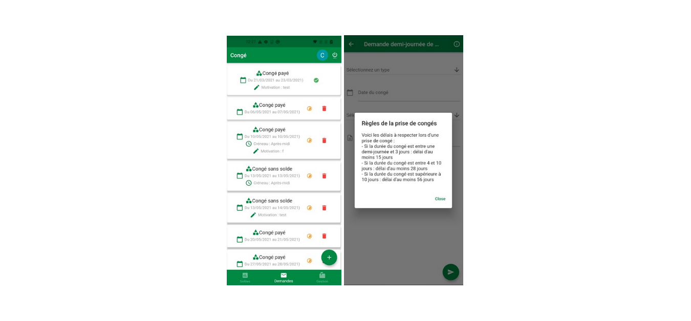
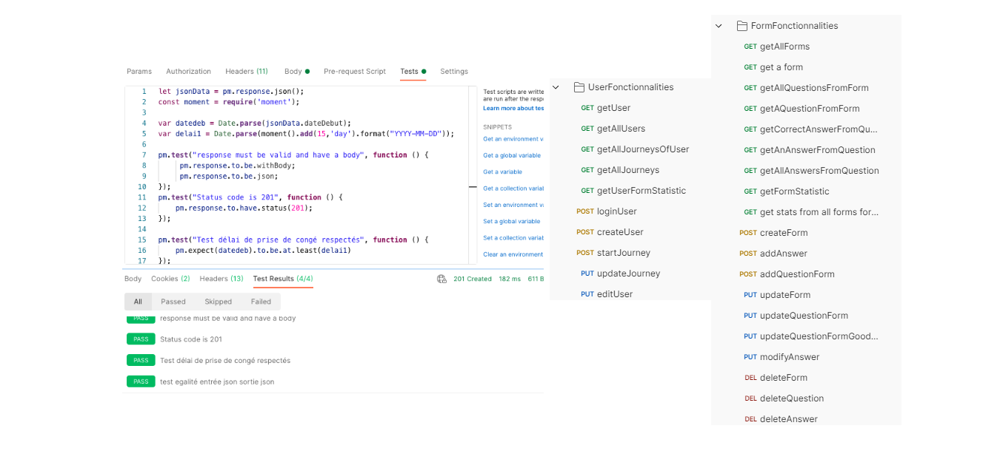
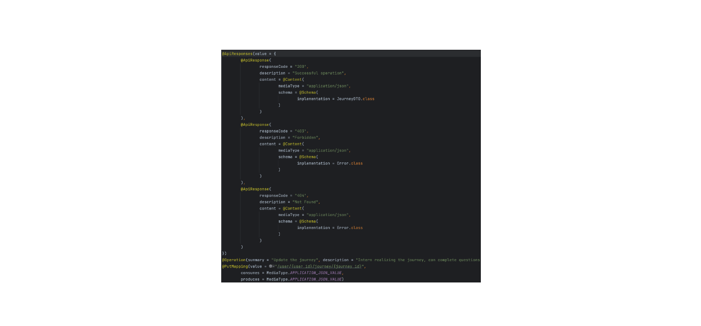

Time and Projects Management for Consultants
Built a system for consultants to track time spent on various projects, across diverse clients, through different tasks, enhancing productivity and project management.
Integrated features for scheduling, reporting, and real-time updates.
Inventory Management System
Developed an application to manage company inventory including PCs, books, keys.
Implemented features for tracking, updating, and reporting inventory status.
Push and mail notification system using Kafka when an alert was sent through the creation of an issue.
Days Off Management Application
Created a system for managing employee leave requests and approvals.
Incorporated a calendar view for easy tracking of team availability and leave balances.
Incorporated history review to follow each request, approval, and cancelation.
Integrated the system with Google Calendar and implemented email and push notifications using Kafka to notify managers of employee requests.
Employee Management System
Developed a comprehensive solution for managing employee data, performance reviews, and departmental information.
Included features for data visualization and easy access to employee records.
Invoices Management Application
Built an application for generating, tracking, and managing invoices.
Streamlined the process of invoice creation, approval, and distribution.
Implemented a mail and push notification system using Kafka to alert about upcoming invoice payment dates.
Form Students Evaluating Application
Built an application for generating, updating and completing forms aimed at students for exams.
Chat Application
Developed a real-time web-application to handle private and group communications using Javascript stack with NodeJS and NextJS.
Project Leadership
Demonstrated leadership in several project initiatives, applying DevOps principles in practical IT environments
Screenshot examples

Example views of Days off management microservice

Examples of Postman Collections

Used Swagger to manage a strong and useful documentation for all projects